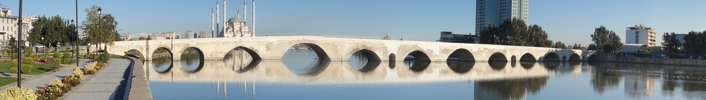

"File:Adana banner Stone Bridge.jpg" by MUSTAFA TOR is licensed under CC0 1.0
CPSC 2125 - ASSIGNMENT 1
Concepts Covered in CPSC 2125:
CSS Box Model
Every HTML content element is contained in a rectangular box
Each element has a a border surrounding its content, which may or may not be visible
Each element may also have extra inner space between the content and border (padding) or extra space outside the border between different elements (margin)
Absolute vs Relative Paths
Every file has a path which gives information about how to find where that file is actually located
Absolute paths contain the full list of directories or folders required to locate a particular file starting at the top-level root directory
Relative paths are shortened versions of paths which assume that you will continue your path from the current active directory, rather than starting at the top-level root directory
Grid Layout
The default layout for a webpage (when no additional styling is applied) is to display elements one after another, straight down the page in the order they are listed within the HTML
The CSS Grid Layout is a way to easily organize elements into rows and columns
One common method of using CSS grids is to label each important element with class names, then explicitly define a template of where each section should display using grid-template-areas